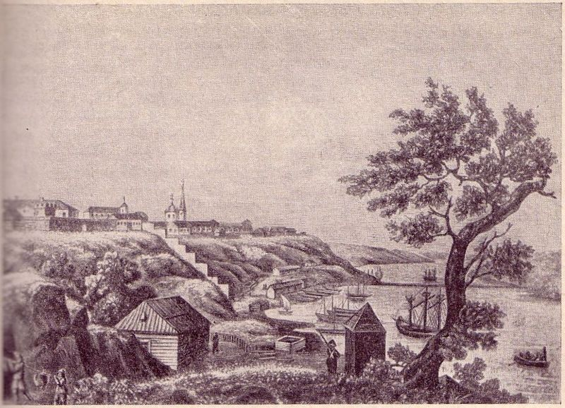
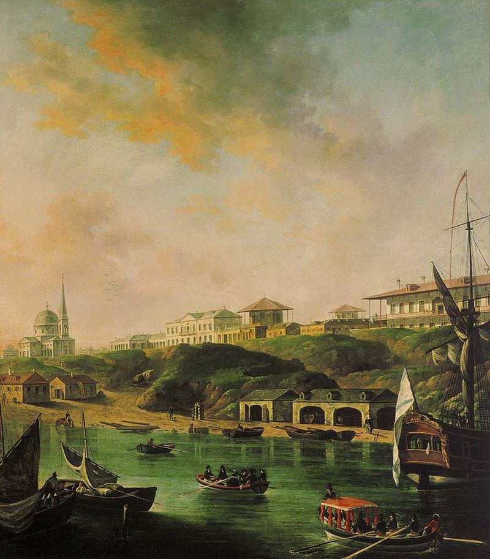

История Николаева
Рождение города связано со строительством первой верфи. Создание верфи на Ингуле, которой генерал-губернатор Новороссии князь Г. А. Потёмкин придавал особое значение, он поручил лично своему первому помощнику по преобразованию южного края статскому советнику М. Л. Фалееву, что следует из ордера № 282 от 27 апреля 1789 года: «Вашему препоручаю попечению … завести верфь на Ингуле».
В ордере № 1065 полковнику М. Л. Фалееву от 27 августа (7 сентября) 1789 года князь Г. А. Потёмкин дал будущему городу название Николаев: «Фаборову дачу именовать Спасское, а Витовку Богоявленское, новозаводскую верфь на Ингуле город Николаев». Считается, что название Николаев дано Потёмкиным в память о взятии российскими войсками под его предводительством турецкой крепости Очаков 6 (17) декабря 1788 года — в День Святого Николая.
10 (21) ноября 1789 года князь Г. А. Потёмкин обратился к Екатерине II с донесением № 84 с просьбой утвердить за Николаевом статус города, согласно Городовому положению Екатерины II от 1785 года. Однако статус города Николаев получил только в октябре 1790 года.
Первым кораблём, построенным в Николаеве, стал фрегат «Святой Николай». Судно заложили на стапелях Николаевского адмиралтейства 6 (17) января 1790 года и спустили на воду 25 августа (5 сентября) того же года.
В апреле—мае 1790 года по приглашению князя Г. А. Потёмкина в Николаеве работал архитектор И. Е. Старов. Он разработал генеральный план города, проекты государственных и личных домов, проект Спасского дворца Потёмкина (построен в 1791 году).
В 1791 году в Николаеве было лишь 26 дворов и 147 жителей. Но уже по состоянию на 1792 год в городе было 1566 жителей, 185 магазинов, лавок и погребов, были открыты торговые ряды. В 1792 году губернатор Екатеринослава Каховский так отзывался о Николаеве в письме секретарю Екатерины II тайному советнику В. С. Попову:
Строений кончено и начато много. Вода в колодцах хороша, а в фонтанах отменно хороша. Деревья посажено много. По хуторам разводятся огороды для поваренных растений и распахиваются земли под посев хлеба. Михайло Леонтьевич показывал нам всё сие, будучи сам в восхищении. Признаюсь в. П-ву, что я пришел изумление увидя толь много строений на том месте, где два года тому назад видел я два только шалаша из камыша сделанных.
В 1792—1795 годах в Николаеве был построен первый мост — Ингульный (Ингульский). Он был наплавным и проложен на понтонах. В 1796 году из Херсона в Николаев было переведено Черноморское адмиралтейское управление. В 1798 году в городе было учреждено училище корабельной архитектуры.
В 1798 году Николаев посетил австрийский путешественник Бальтазар Гакет во время поездки по Северному Причерноморью. Он оставил такие воспоминания о городе: «Пошел прямой дорогой в Николаев, красивейший город сред степей всей Таврии: в нем множество больших улиц, с отдельно стоящими домами, с колоннами, красивыми площадями и большим зданием Адмиралтейства вместе с корабельной верфью».
7 октября 1803 года был высочайше утвержден первый герб города. Он просуществовал 80 лет.
В 1812 году во время Отечественной войны из матросов Николаева и Севастополя был сформирован 75-й корабельный экипаж. Высадившись в устье Дуная, экипаж соединился с армией адмирала Павла Чичагова, участвовал во многих боях и во взятии Парижа. Активное участие в войне принимали также Бугское казачество и эскадрон, сформированный из местных жителей.
C 1816 по 1833 год военным губернатором Николаева был Алексей Грейг. Он много сделал для украшения города: основал бульвар, озеленил улицы и пустыри, построил много зданий, развёл сады.
В ноябре 1820 года Грейг велел начать работы по строительству городского водопровода. Водопровод, получивший название Спасский, сооружался под руководством полковника округа путей сообщения Рокура. Строительство было окончено в 1825 году, но из-за некачественных труб вода подавалась только в дом Главного командира. До конца XIX века вода поставлялась из Спасского источника, откуда её развозили для продажи по городу в бочках.
В 1821 году по предложению городского головы купца Кустова в районе Поповой балки (на юго-востоке Николаевского полуострова) была построена Купеческая пристань. К ней был проложен спуск, по которому на телегах везли грузы. Возле той же Поповой балки приглашённый Грейгом иностранец Самаси открыл кирпичную, черепичную и фаянсовую фабрики, а Алиауди (Аляуди) устроил механическую мельницу, при которой выделывались сукна и фланель. Там же был сооружён пильный завод Бакстера и Лаутона, пивоваренный завод и лесные склады.
В том же 1821 году по инициативе Грейга в Николаеве была построена первая на юге обсерватория. Для её расположения был выбран Спасский холм — наиболее высокое место на Николаевском полуострове. Здание обсерватории было построено по проекту архитектора Фёдора Вунша инженером-гидротехником Борисом Фан-дер-Флисом. Обсерваторией на протяжении 50 лет лет заведовал Карл Кнорре.
В 1822 году была предпринята первая попытка официального именования улиц Николаева: городской полицмейстер Павел Фёдоров разработал проект названий основных улиц города. В проекте предлагались названия тринадцати продольным улицам (идущим с запада на восток Николаевского полуострова) и семи поперечным. Однако Грейг не утвердил этот проект.
В начале 1830-х годов по распоряжению адмирала Грейга из Николаева были проложены линии оптического телеграфа в Севастополь, Херсон и Измаил.